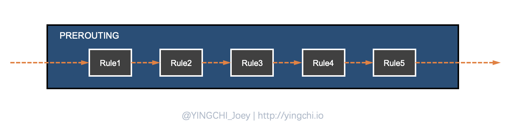
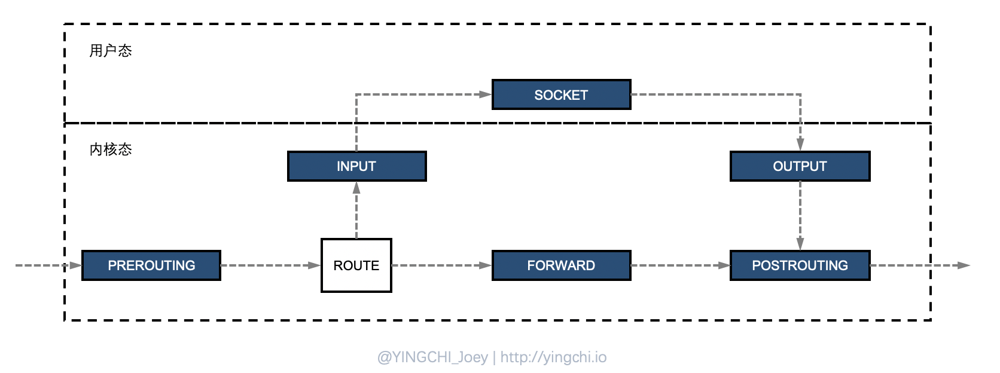
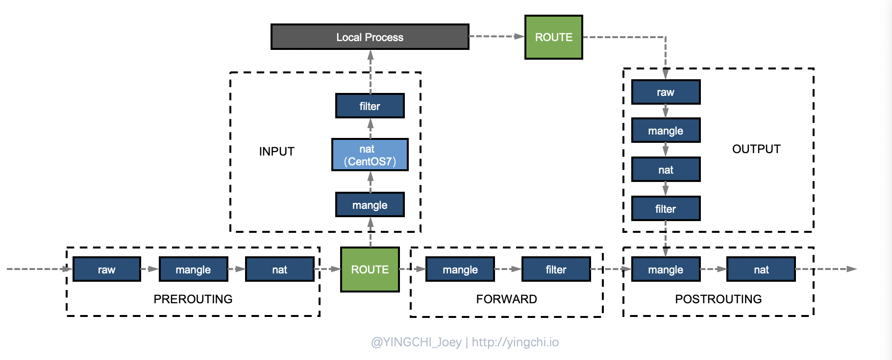

Linux Netfilter/iptables 学习
Linux 网络协议栈非常高效，同时比较复杂。如果我们希望在数据的处理过程中对关心的数据进行一些操作，则该怎么做呢？Linux 提供了一套机制来为用户实现自定义的数据包处理过程。在 Linux 网络协议栈中有一组回调函数挂接点，通过这些挂接点挂接的钩子函数可以在 Linux 网络栈处理数据包的过程中对数据包进行一些操作，例如过滤、修改、丢弃等。整个挂接点技术叫作 Netfilter 和 iptables。
Netfilter 与 iptables 不是两个独立的组件，Netfilter 是一个位于内核空间的防火墙框架，而 iptables 可以认为是一个位于用户空间的客户端。
Netfilter 的核心功能就是数据包过滤、数据包修改、网络地址转换（NAT）
基础概念
规则概念
iptables 最核心的概念是 Rules，即规则，一句话概括其工作逻辑就是“对于匹配到规则的数据包执行预先指定好的逻辑”。这里涉及到几个概念，首先是匹配，从字面上很好理解，匹配就是看对不对的上号，对于 iptables 而言，它面对的是数据包，因此它要匹配的自然是与数据包相关的信息，比如源地址、目的地址、传输协议、服务类型，只有当这些可以匹配的时候，才执行一些规则逻辑，比如放行、拒绝、丢弃等。
五链
或许你对 iptables 具体是做什么的，怎么工作的并不熟悉，但是当你听到一个内行来讲 iptables 的时候，他一定会提到“四表五链”，那么什么是 iptables 的四表无链？他们又有什么作用呢？
首先说“链”，这里的链指的是“规则链”，即在 iptables 的工作过程中，并不是只通过一条规则来处理数据包的，而是有许多规则，这些规则按照一定的顺序排列起来，报文经过 iptables 时就要对着一些规则一条一条进行匹配，执行相应的动作，我们把这种一系列的规则看作是一种串联，则称为是“链”。
比如以其中一条称作 PREROUTING 的链来看，它的内部结构是这样的：

数据包会在这条链里经过很多条的规则匹配，如果该数据包不符合链中任一条规则，iptables就会根据预先定义的默认策略来处理数据包。
在 iptables 中存在着如下五条链：

- PREROUTING 链：路由选择前；
- INPUT 链：路由目的地为本机；
- FORWARD 链：路由目的地非本机，转发；
- OUTPUT 链：本机发出数据包；
- POSTROUTING 链：路由选择后；
四表
知道了五链之后，接下来看四表，如果说链是表现的是一系列规则的执行顺序关系，那么表则是表现的一系列规则的功能逻辑关系，我们把具有相同功能的规则集合称为“表”，因为我们会发现有时在不同的链上执行的规则它们之间是有内在关联的，或是对数据的过滤，或是对报文数据的修改等等，iptables 为我们提供了如下的规则分类：
- Filter 表：iptables 默认表，负责包过滤，防火墙功能；
- NAT 表：负责网络地址转换功能，对应内核模块；
- Mangle 表：主要负责修改数据包，对应内核模块；
- Raw 表：优先级最高，关闭 NAT 表启用的连接追踪机制；
注意这些表是有优先级之分的，优先级高到低：raw–>mangle–>nat–>filter
链与表的对应也不是随随便便的，有些表的规则只有对应链上可能存在，具体的链表对应关系如下：：
PREROUTING 链：raw表，mangle表，nat表。
INPUT 链：mangle表，filter表，（centos7中还可以有nat表）
FORWARD 链：mangle表，filter表。
OUTPUT 链：raw表mangle表，nat表，filter表。
POSTROUTING 链：mangle表，nat表。

再看规则
一开始只是提到了规则这个概念，那么规则的匹配和规则逻辑该如何定义和进行呢？
匹配条件
分为基本匹配条件和扩展匹配条件
- 基本匹配条件：源 IP，目标 IP；
- 扩展匹配条件：除了上述的条件可以用于匹配，还有很多其他的条件可以用于匹配，这些条件泛称为扩展条件，如源端口，目的端口等；
规则逻辑
规则逻辑在 iptables 中称为 target，常见的一些处理逻辑如下：
-
ACCEPT：允许数据包通过；
-
DROP：直接丢弃数据包；
-
REJECT：拒绝数据包；
-
SNAT：源地址转换，可以解决内网用户用同一个公网地址上网的问题；
-
DNAT：目标地址转换；
-
MASQUERADE：是SNAT的一种特殊形式，适用于动态的、临时会变的ip上；
-
REDIRECT：在本机做端口映射；
-
MARK：数据包打标记；
注意：
- 目标地址转换一般在 PREROUTING 链上操作
- 源地址转换一般在 POSTROUTING 链上操作
总结
1、当主机收到一个数据包后，数据包先在内核空间中处理，若发现目的地址是自身，则传到用户空间中交给对应的应用程序处理，若发现目的不是自身，则会将包丢弃或进行转发。
2、iptables实现防火墙功能的原理是：在数据包经过内核的过程中有五处关键地方，分别是PREROUTING、INPUT、OUTPUT、FORWARD、POSTROUTING，用户可以在这五条链上编写 Rules，对经过的数据包进行处理，规则一般的定义为“如果数据包头符合这样的条件，就这样处理数据包”。
3、iptables中定义有5条链，每条链中可以定义多条 Rules，每当数据包到达一条链时，iptables就会从链上第一条规则开始匹配，看该数据包是否满足规则所定义的条件。如果满足，系统就会根据该条规则所定义的规则逻辑（称为 target）处理该数据包；否则 iptables 将继续检查下一条规则，如果该数据包不符合链中任一条规则，iptables就会根据预先定义的默认策略来处理数据包；
4、iptables中定义有表，分别表示提供的功能，有filter表（实现包过滤）、nat表（实现网络地址转换）、mangle表（实现包修改）、raw表（实现数据跟踪），这些表具有一定的优先级：raw–>mangle–>nat–>filter